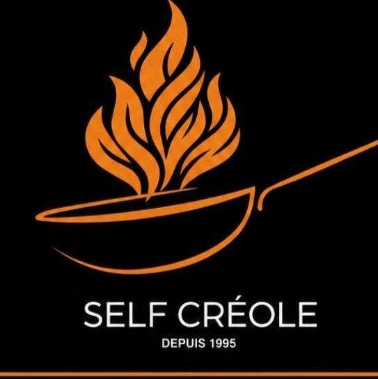
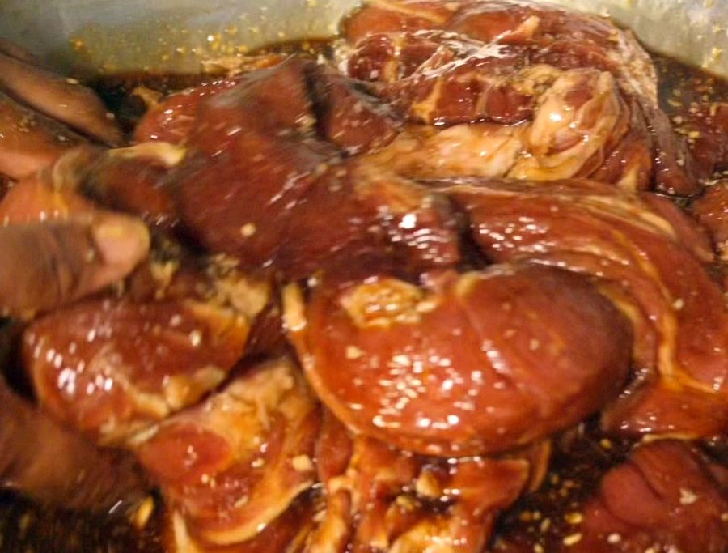
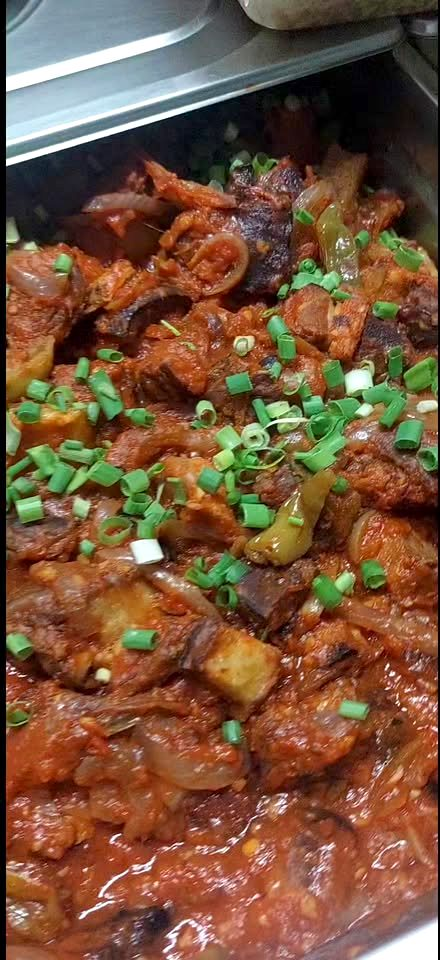
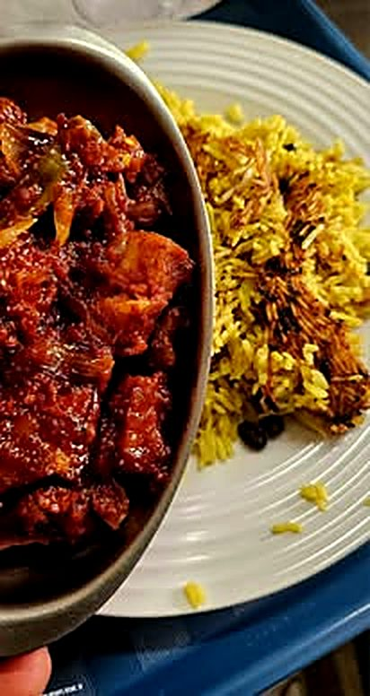
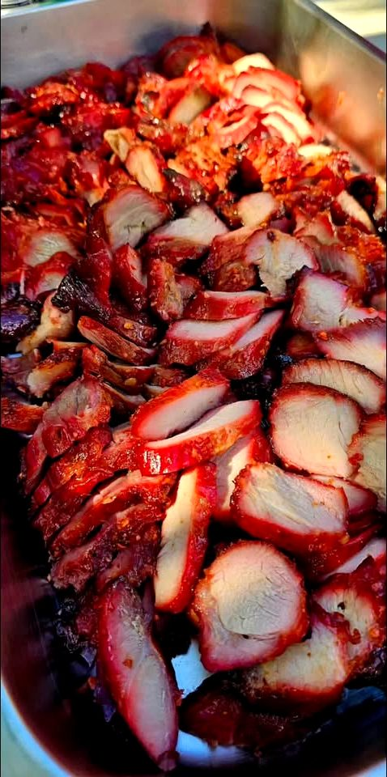
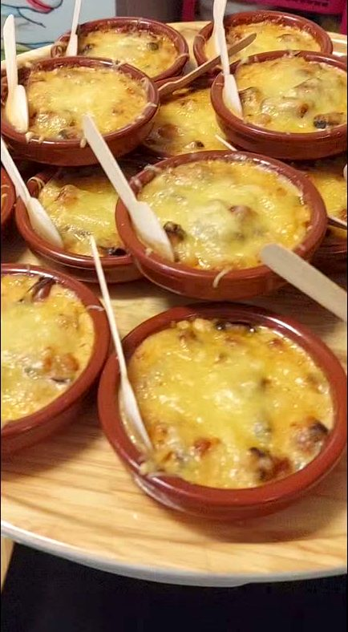
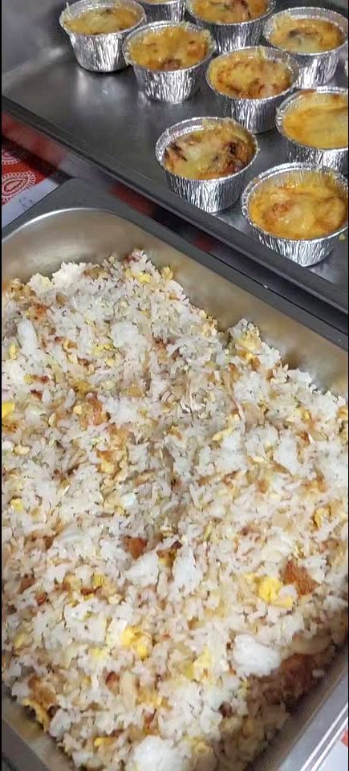
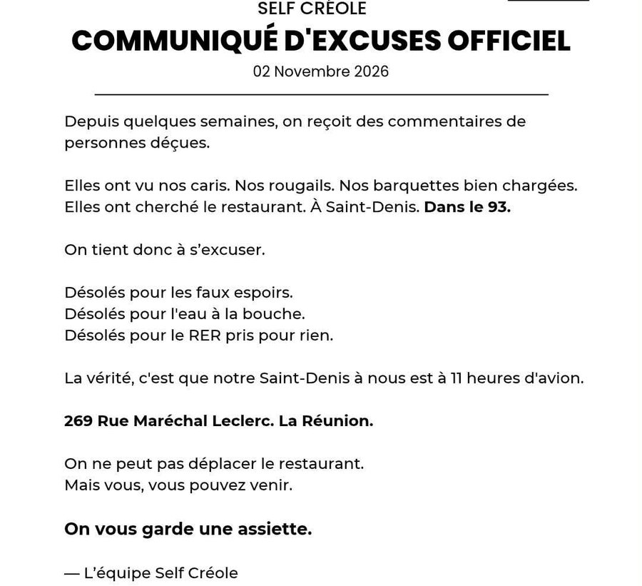

Service du midi · 11h30 – 13h30Saint-Denis de La Réunion · depuis 1995
Le goût qu’on recherche depuis 30 ans. Cuisine créole authentique, sur place ou à emporter.
Commandes avant 11h00 · 269 rue du Maréchal Leclerc
Notre histoire
« Des plats créoles incontournables, des plus classiques aux plus anciens, avec un goût qui rappelle le dimanche chez mémé. »
Publication du Self Créole, 27 octobre 2026
Pendant plus de 30 ans, ses parents ont fait vivre le « Self créole chez Matante », petit restaurant dionysien bien connu des habitués. En mai 2023, Loïc, cuisinier de métier, a repris le flambeau : « Je veux surtout rendre hommage à mes parents. »
Aujourd’hui, derrière chaque assiette, Loïc cuisine avec amour, comme on dit, pour un maximum de saveurs authentiques. Et il partage ses secrets en vidéo : la sarcive, la confiture de fruit à pain, la différence entre le cari et le rougail…

by LoïcLe menu du jour
« Bonjour bonjour zot toutes, ala li la le menu du jour, hésite pas passe prend zot ti barquette ou passe directement zot commande au 0692 072403 avant 11h00 ☎️ »Le rendez-vous quotidien de la page Facebook du Self Créole
Chaque matin, le menu du jour est publié sur la page Facebook.
Un appel ou un message au 0692 07 24 03, et ta barquette t’attend.
Au 269 rue du Maréchal Leclerc, ou installe-toi sur place pour un bon ti repas créole.
Dans les marmites





← glisse pour voir les assiettes →
Photos issues des publications et vidéos du Self Créole.
Le samedi au Self
« Demain samedi i sava bien manger… poulet rôti au four chinois… tendres… moelleux… un p’ti goût charbon… rôti porc frais cuit doucement… »
Publication du 16 octobre 2026

Communiqué d’excuses officiel · 2 novembre 2026
Des curieux ont vu les caris, les rougails, les barquettes bien chargées… et ont cherché le restaurant à Saint-Denis. Dans le 93. Le Self Créole leur a répondu avec le sourire :
Choisis, on te dit tout.
30 à 35 ansde fidélité
C’est ce que raconte un habitué dans la vidéo « Témoignage d’un client fidèle » publiée par le Self Créole. La page Facebook affiche « Recommandé par 100 % » de ses avis.
Infos pratiques
| Lundi | 11h30 – 13h30 |
| Mardi | 11h30 – 13h30 |
| Mercredi | repos |
| Jeudi | 11h30 – 13h30 |
| Vendredi | 11h30 – 13h30 |
| Samedi | 11h30 – 13h30 |
| Dimanche | 11h30 – 13h30 |
Commandes avant 11h00. Les fermetures exceptionnelles sont annoncées sur Facebook.
269 rue du Maréchal Leclerc
97400 Saint-Denis
Saint-Denis de La Réunion, oui oui : à 11 heures d’avion du 93 😉
Sur place · À emporter · Prix doux (€)